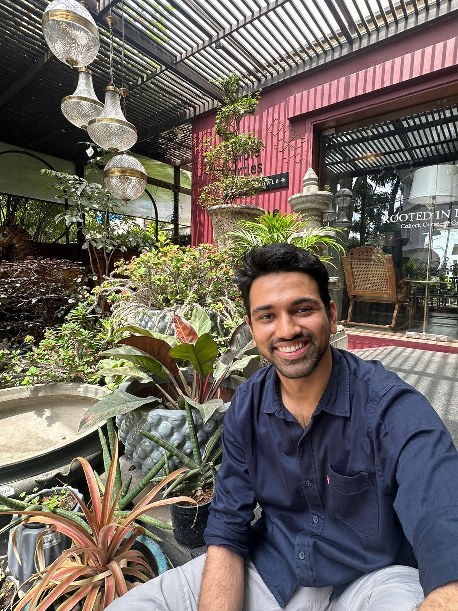
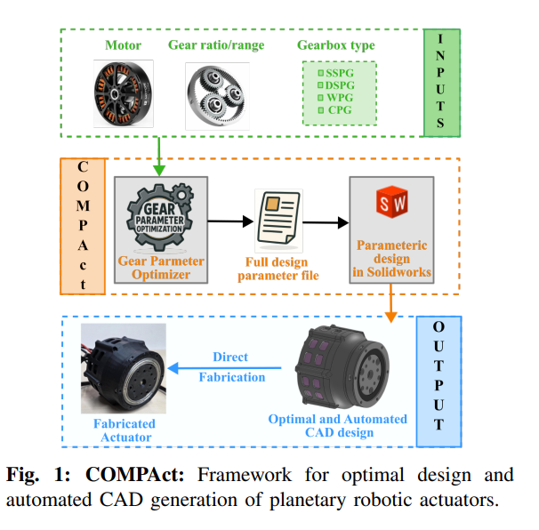

Project Scientist at IISc Bangalore, working at the intersection of model-based control and learned locomotion. Building legged robots that move reliably through the real world — across uneven terrain, disturbances, and the gap between simulation and reality.

I'm a robotics researcher and engineer at IISc's Robert Bosch Centre for Cyber Physical Systems, Bangalore. My work sits at the boundary of model-based control and reinforcement learning — building locomotion systems for legged robots that work when you take them out of simulation.
At IISc, I've been the sole technical contributor to developing convex MPC for bipedal locomotion for DRDO — achieving stable walking across 45° sinusoidal inclines carrying 10 kg payload. Alongside this, I designed a hybrid MPC + RL system at Strider Robotics (ARTPARK) extending Walk These Ways — introducing MPC-derived GRF rewards, Raibert foot placement rewards, and slope-aware MPC formulation, reducing falls by 93% on low-friction surfaces and 87% on steep inclines. Validated on Stoch 5, a custom 70 kg quadruped.
Before focusing on robotics, I spent two and a half years at Mila (Université de Montréal) on hierarchical planning, lifelong learning, and disentangled representations for RL. Prior to that, I worked on autonomous helicopter trajectory optimisation at Carnegie Mellon's Airlabs.
I'm interested in roles where physical AI reliability and safety genuinely matter — where the robot needs to work consistently, not just demo convincingly.
Extended convex MPC — originally developed for quadruped platforms — to bipedal locomotion as sole technical contributor on an active DRDO project. Achieves stable walking across 45° sinusoidal inclines while carrying a 10 kg payload in simulation.
Hybrid locomotion architecture extending Walk These Ways — introduced MPC-derived GRF rewards, Raibert foot placement rewards, and slope-aware MPC formulation. Reduced falls by 93% on low-friction surfaces and 87% on steep inclines vs. baseline. Validated on Stoch 5, a custom 70 kg quadruped, one of the heaviest platforms on which this class of controller has been demonstrated.
Extended the DRDO humanoid's existing whole-body controller — built on LIPM MPC for footstep planning and a prioritised task-space QP for whole-body control. Added probing-based rough terrain walking and improved staircase traversal from single-step (45°) to reliable multi-step climbing at 30° and 45°. Conducted mass and environmental variation experiments, fulfilling two additional DRDO milestones.
Co-design framework that automatically optimises biped morphology with the locomotion controller in the loop. The force/moment MPC controller evaluates candidate designs during optimisation, ensuring that the resulting robot geometry is tuned for dynamic performance rather than designed open-loop.

M.S. thesis at Mila (Université de Montréal). Hierarchical planning framework using explicit concept representations for complex sequential decision-making. Skill segmentation and concept learning systems continually accumulate and transfer knowledge across tasks — addressing catastrophic forgetting and enabling sample-efficient generalisation.
Open to research collaborations, industry roles in robotics and physical AI, and conversations at the intersection of reliable autonomous systems and real-world deployment. Based in Bangalore.